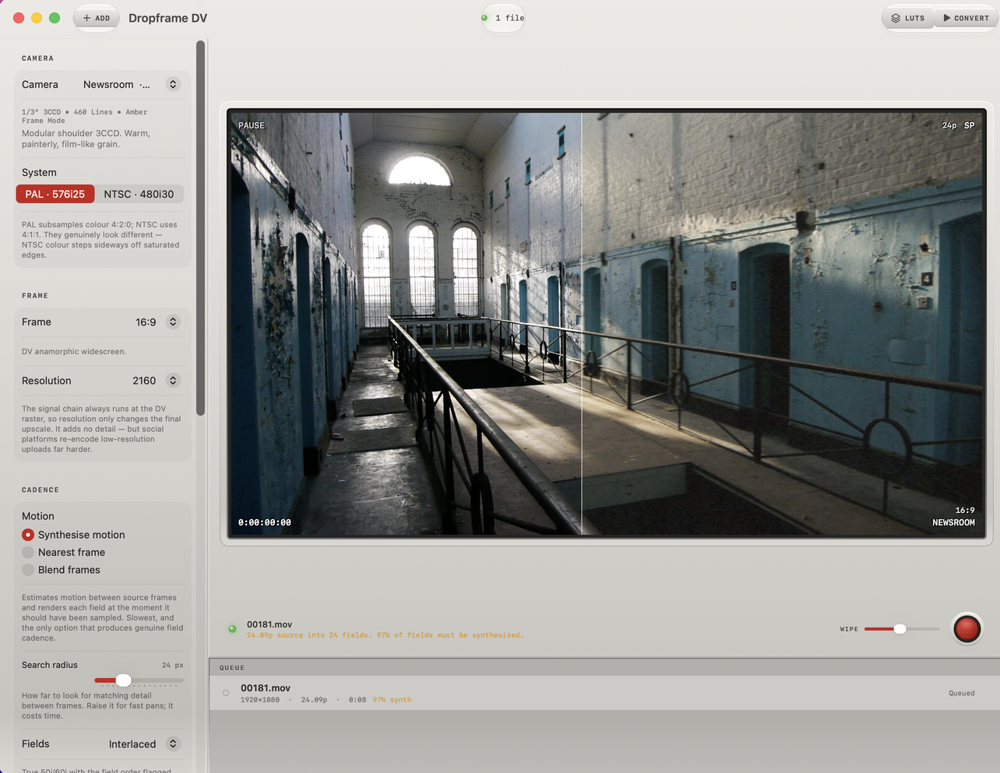
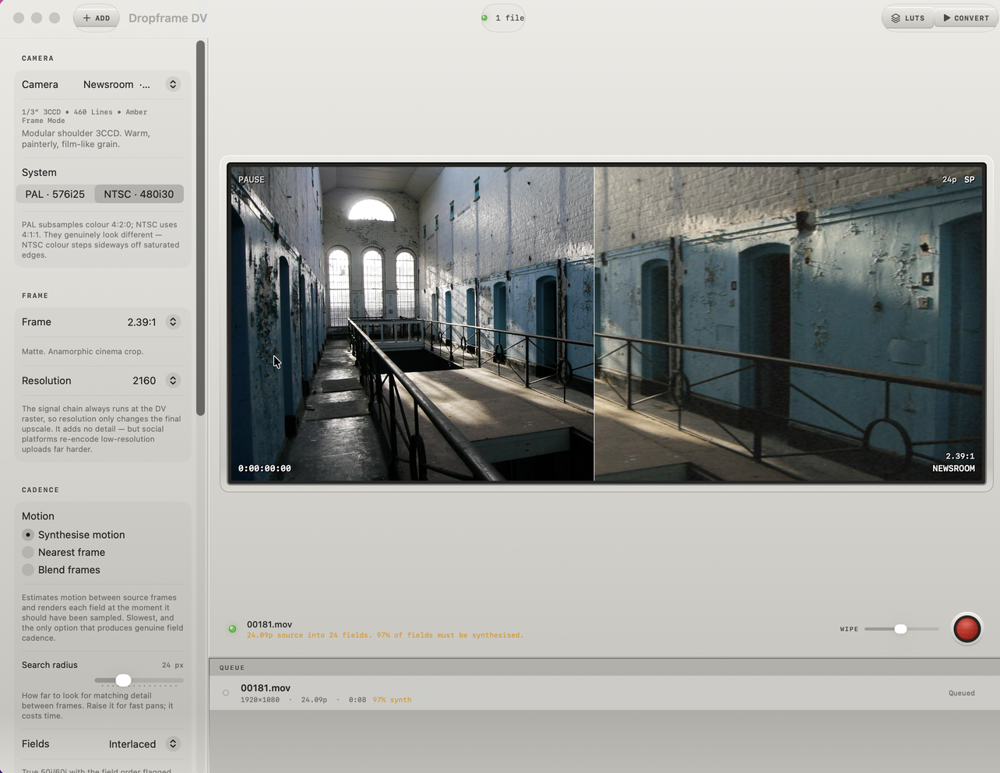
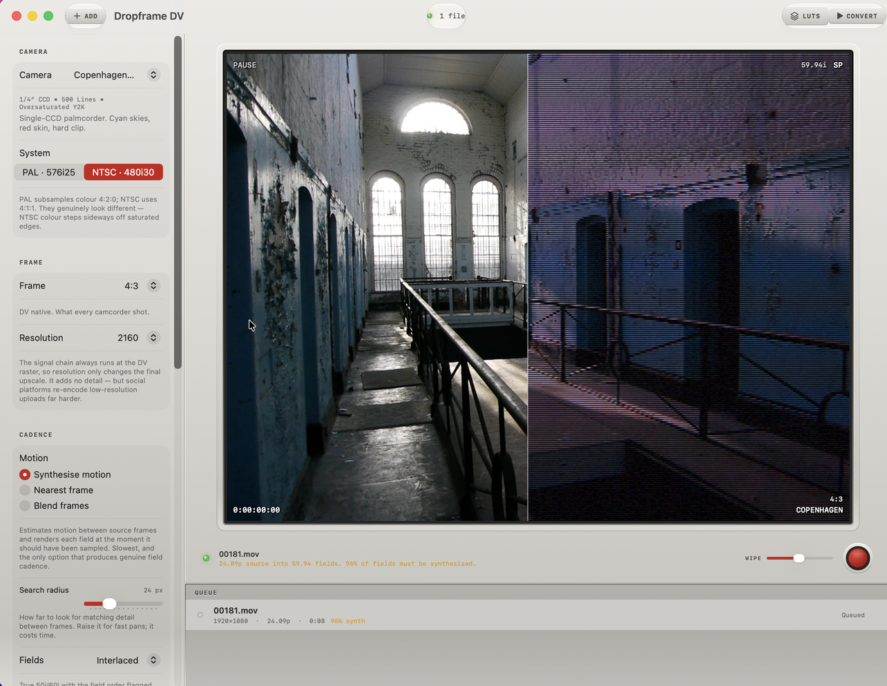
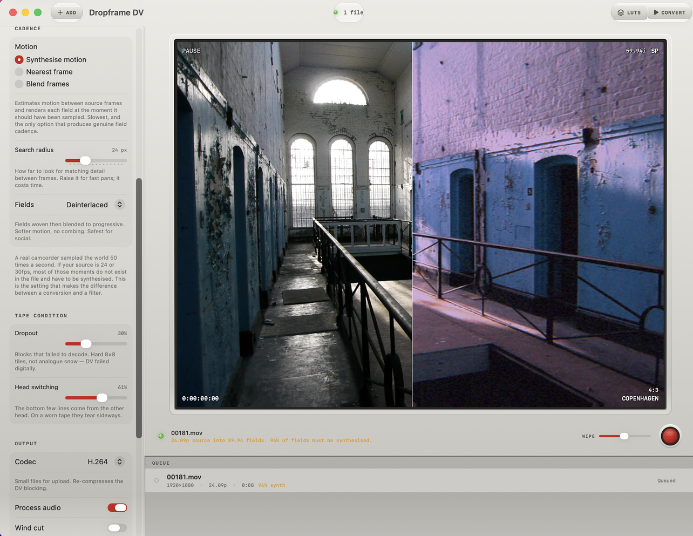

Drop in what you shot. Pick one of eight camcorders. Dropframe rebuilds it through the real signal path and writes ProRes your editor cuts natively.
A camcorder sampled the world 50 times a second in PAL, 59.94 in NTSC. Every field is a separate moment in time. That temporal density is why camcorder footage feels immediate rather than cinematic.
Drop in 24p footage and you have 24 moments. The other 26 do not exist anywhere in the file. They cannot be filtered into being — they have to be synthesised: estimate the motion between the two nearest source frames, then render the field at the instant it should have been sampled.
Every VHS plugin skips this. They draw scanlines onto 24 frames. On a static shot you cannot tell. On a pan it is obviously wrong — the comb teeth sit still between fields instead of stepping forward in time.
Dropframe shows you this figure per file before you start, so a long job announces its cost rather than surprising you forty minutes in.
A real frame from your own footage, wiped between source and result. Drag the divider. Every reading on the monitor is live state — no decorative gauges.




Shared code, not a port. The colour matrices, the chroma subsampling, the DCT quantisation and the interlacing are the same files on both platforms — so the same camera name gives the same look whether you shot it or converted it.
The iPhone app is acquisition — a camcorder you carry. This is conversion and finishing, for everything you already shot on something else. Buy either. Most people end up with both, and the eight cameras behave identically across them.
Apple silicon or Intel with Metal support. Conversion is GPU-bound — an Apple silicon Mac is substantially faster at motion synthesis. Everything runs on your device: no accounts, no uploads, no network.